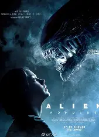
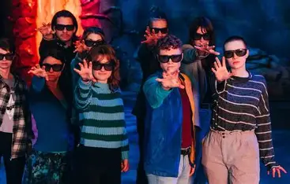
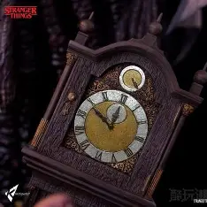

《怪奇物语》充满了对80年代经典科幻、恐怖、冒险作品的致敬：
1. 致敬《E.T.外星人》：十一的形象和逃离实验室的剧情，与E.T.的设定高度相似，主角小队骑着自行车带着十一躲避追捕的场景，更是直接致敬了《E.T.外星人》的经典镜头；
2. 致敬《闪灵》：第4季中维克纳的杀人手法、酒店场景，都致敬了库布里克的经典恐怖电影《闪灵》；
3. 致敬《异形》：颠倒世界的怪物设计，借鉴了《异形》中异形的外形和猎杀方式。

1. 米莉·波比·布朗（十一饰演者）在拍摄时，为了贴合角色的“无表情”设定，经常刻意控制自己的表情，私下里却是个活泼开朗的女孩；
2. 主角小队的小演员们在拍摄过程中结下了深厚的友谊，现实中的他们也像剧中一样，经常一起玩耍、互相照顾；
3. 大卫·哈伯（霍珀警长饰演者）在拍摄第3季的牺牲场景时，一度情绪失控，无法从角色中抽离，可见演员对角色的投入程度。

1. 每一季的片头字幕中，都会隐藏着与本季剧情相关的线索（如第4季的字幕中出现了维克纳的符号）；
2. 霍金斯小镇的广告牌、商店名称，很多都来自80年代的经典品牌，充满了复古情怀；
3. 十一的超能力强弱，会通过她的发型变化来暗示：发型越简洁，超能力越强，这是剧组的隐藏设定。